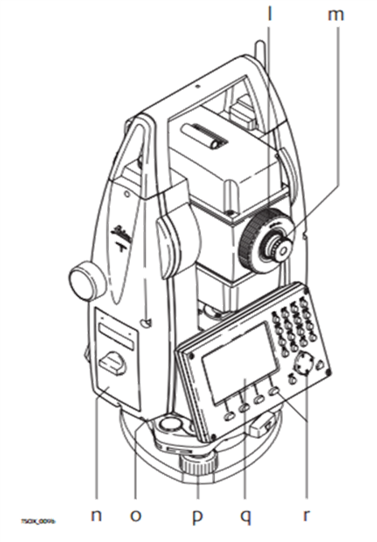

Мавзу: Leica TS 06+ электрон тахеометрида топографик съёмка ишларини бажариш
Reja.
1. Leica TS 06+ электрон тахеометрининг тузилиши
2. Топографик съёмка ишларини бажариш тартиби
LEICA TS 06 PLUS электрон тахеометрининг қисмлари

a) Асбоб ва трегер
b) Кабел GEV189 (USB-RS232)
c) Доиравий адилак GLI115
d) Инструмент баландлигини ўлчовчи мослама GHT196
e) Ясси нурқайтаргич CPR105
f) Инструмент баландлигини ўлчовчи мослама GHM007
g) Обектив ва линза қопқоғи
h) Инструмент учун комуникация блоки кабели GEV223 (USB-mini USB)
i) Кичик призма GMP111

j) Юстировкалаш мосламаси
k) Оккуляр насадкаси GFZ3
l) Аккумляторлар GEB211
m) Қувватловчи мосламалар GKL211
n) Ясси ва кичик призмалар учун GAD105 маркали адаптер
o) Приборнинг коммуникацион блокидаги фойдаланиш USB-флэшка MS1 хотираси
p) Аккумляторлар GEB221
q) Кичик призмалар учун уч вазифасини бажарувчи мослама
r) Оккуляр ва линза учун қарши оғирлик мосламаси
s) Фойдаланиш йўриқномаси
t) Кичик вешка GLS115
a) USB флэшка ва USB кабел учун хотира блоки
b) Bluetooth антеннаси
c) Оптик визир
d) Приборни кўтириб юриш учун винтлар ёрдамида қотирилган ушлаш мосламаси
e) Лазерлий маёқ EGL
f) Интеграллашган линзалар (EDM). Лазер нурларининг тарқалиш жойи
g) Вертикал холатга тузатма киритувчи микрометр винти
h) Приборни ёкиш ёки ўчириш тугмаси
i) Интерактив санов олиш тугмаси
j) Горизонтал холатга тузатма киритувчи микрометр винти
k) Бошқариш мосламаси

l) Обективни фоккусловчи халқа
m) Оккулярни фоккусловчи халқа
n) Блок аккумлятор қопқоғи
o) Порт RS232
p) Кўтарувчи ва туширувчи винтлар
q) Дисплей
r) Клавиатура
a) Bluetooth антеннаси
b) Блок аккумлятор қопқоғи
c) USB флешкани махкамловчи мослама
d) USB флешка учун порт
e) USB порт инструментни улаш учун
a) Тезкор калит тугмалари
b) Навигатор
c) ENTER тугмаси
d) ESC тугмаси
e) F1 - F4 функционал тугмалар
f) Алифболи ва рақамли тугмачалар
Белгиланган худудни топографик съёмка қилиш учун, энг аввало худудда рекогносцировка
(худадни кузатиш ва/ёки разветка қилиш) ишлари олиб борилади ва худуднинг абрис(тасаввурдаги
хомаки чизма)си чизилади.
Худуд тўлиқ ўрганиб бўлинганч, база ўрнатиш учун энг мақбул жой танланди. Мақбул жойдан
туриб қаралганда худуднинг энг кўп қисми кўриниши лозим. База ўрнатишда махаллий (шартлий)
координаталар тизимидан ёки давлат координаталар тизимидан фойдаланилишига қараб съёмка
турлари танланади.
Масалан: махаллий (шартлий) координаталар тизимида маълум бир бурчакка нисбатан
ориентирланади (ориентир по углом, 1-расм) ва горизонтал бурчаклар нол қийматига тенглаб
олиниб X,Y ва Z қийматлари ихтиёрий тарзда киритилади. Агарда GPS ёки GNSS приёмниклари
ёрдамида аниқланган координаталар мавжуд бўлса у ҳолда (ориентир по координатам 2-расм)
координаталар тизимига асосланиб X,Y ва Z қийматлари приёмникдан олинган қиймат бўйича
киритилади ва ориентир олинади.
База ўрнатиш учун мақбул жой танлангач, мазкур нуқтага штатив ўрнатилади. Тахеометр
трегер ёрдамида штативга махкамланади (3-расм). Тахеометрдан тушаётган лазер нури ёрдамида
прибор нуқтага марказлаштирилади. Инфо тугмаси ёрдамида приборнинг қуввати ва хотираси
текирилади (4-расм). Сунгра доиравий адилак пуфакчалари марказга келтирилади.(5-расм)
1-босқич:
Бош менюдан Управления банди танланади ва Проект қатори танланади сўнгра янги проект
яратилади. Хосил булган дарчадан проектга ишнинг мавзусидан келиб чиқиб ном берилади ва
интер тугмачаси босилади. Натижада ҳосил бўлган навбатдаги дарчага далее яъни F4 тугмачаси
икки маротаба босилади ва дисплейда данный записано ва проект зарегистрировано ёзувлари
номаён бўлади.(6-расм)
2-босқич:
Бош менюдан твёрдая точка бандига кирилиб ҳосил бўлган ишчи дарчага мазкур турган
нуқтамизнинг маълумотлари киритилади.(7-расм)
Масалан: номи Т1
X=1000
Y=2000
H=500
ва F4 тугмачасини босиш ёрдамида кейинги Т2 нуқтанинг маълумотларини киритиш сўралади.
Агарда шартли координаталар асосида иш олиб борилаётган бўлса Т2 нуқтаси киритилмайди ва 2
маротаба ESC тугмачасини босиб дарчадан чиқиб кетилади.
3-босқич:
Бош менюдан программага кирилиб установка станйия қатори танланади ва F4 тугмачаси
босилиб запус қилинади. Хосил бўлган навбатдаги дарчадан съёмка методига кўра ориентиро по
углу методи танланади(шартли координаталар тизими бўлганлиги сабабли) кейинги қатордаги
станция бендидан F2 тугмачасини босиб спискадаги мавжуд яратилган Т1 нуқтаси F4 тугмачаси
ёрдамида юклаб олинади. h инструмент баландлиги ўлчанади ва метр бирлигида киритилади. F4
тугмачаси ёрдамида далее функцияси бажарилади ва шимолий қутбга ёки қўзғалмас объектга
нисбатан ориентирланиб h горизонтал бурчагимизни нол қийматига тенглаб оламиз. Сўнгра F2
тугмачаси ёрдамида установка функцияси бажарилиб, старнция ориентир установлена ёзуви остида
инфо намоён бўлади. (8-расм)
8-расм. Янги қўзғалмас нуқта координаталарини киритиш ойнаси
4-босқич:
Бош менюдан программи бандига кирилиб съёмка қаторига кирилади ва F4 тугмачаси ёрдамида
запуск амали бажарилди. Натижада хосил бўлган дарчадан нур қайтаргичнинг баландлиги
киритилади ва керакли бўлган нуқталарнинг бўсахасидан нур қайтаргич ёрдамида белгиланади.
Прибор билан визир ёрдамида нур қайтаргич нишонга олинади ва ВСЕ тугмачасини босиб
маълумотлар аниқлаш жараёни амалга оширилади.(9 ва 10 расмлар).
Натижада дисплейда Станция и ориентация установлены инфоси намоён бўлади. Сўнгра бош
менюдан съёмка банди танланиб топографик съёмка ишлари F4 тугмачасини босиш орқали давом
эттирилади.
Юқорида келтрилган кетма-кетликларни бажариш натижасида худудлардаги
топографик-геодезик дала қидирув ишлари амалга оширилади ва махсус дастурий таъминотларда
тенглаштириш ишлари (редукция ва марказлаштириш хатоликларини тарқатиш ишлари)ни амалга
ошириш босқичи олиб борилади.(12-расм)
12-расм. Тенглаштириш жараёни
Тенглаштириш ишлари якунига етгач абрис асосида худуднинг плани ва интерполяция усули
ёрдамида худуднинг рельефлари қурилади. Амалда бажарилган ишларнинг натижаларига таяниб уч
ўлчамдаги модел қуриш имкониятинихам беради. (13 ва 14 расмлар)